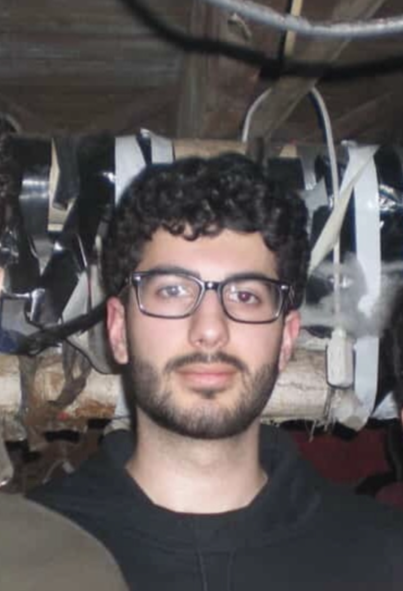

Contact
I'm interested in opportunities involving network engineering, network security, cloud infrastructure, cybersecurity, and infrastructure engineering.
Email: amirf568.work@gmail.com
You can learn more about my experience below:
I’m a Computer Science and Mathematics student at Rutgers University interested in network engineering, cloud infrastructure, cybersecurity, and automation.
I enjoy understanding how complex systems communicate, operate, and stay secure — from physical network infrastructure and enterprise networking to monitoring, automation, systems administration, and cybersecurity.
My experience has given me the opportunity to work across networking, infrastructure, software engineering, and security. I’m especially interested in designing, automating, monitoring, troubleshooting, and securing the infrastructure that modern systems depend on.
I’m continuing to build experience in network engineering, network security, cloud engineering, infrastructure automation, and cybersecurity while applying my Computer Science and Mathematics background to real-world technical problems.
This website is a work in progress — check back for updates!

Institute for Advanced Study · Princeton, NJ
Working across enterprise networking, infrastructure, cybersecurity, automation, software security, and IT systems in a production research environment.
Support enterprise network and data center infrastructure across multiple layers of the OSI model, including fiber optics, Ethernet, switches, servers, wireless access points, IPAM, and network services.
Lead the installation and replacement of 300+ wireless access points across campus and residential facilities, coordinating with Facilities and troubleshooting SSID, coverage, and connectivity issues.
Built and maintain a database tracking thousands of fiber strands and support network switch replacements and other infrastructure upgrades.
Develop Python scripts for network automation and configuration assurance workflows, improving configuration consistency and reducing manual processes.
Use Icinga and Nagios to monitor server and network infrastructure and assist with identifying operational issues.
Contribute and review code through GitLab using version control and collaborative software development practices.
Investigate security incidents and network threats, including phishing emails, SMTP authentication attacks, malicious IP activity, and suspicious network traffic.
Use Plixer and other network observability and NDR tooling to analyze network activity and support incident investigation and response.
Perform software security reviews, identify potential vulnerabilities, write structured security finding reports, and track remediation through GitLab.
Provide technical support through the RT ticketing system, troubleshooting endpoints, printers, network connectivity, and other user issues.
Deploy and configure Apple laptops, desktops, and Linux systems for incoming members of the School of Natural Science.
Use Drupal to maintain user-facing technical documentation on the IAS website, including wireless network connectivity and access information.
I'm interested in opportunities involving network engineering, network security, cloud infrastructure, cybersecurity, and infrastructure engineering.
Email: amirf568.work@gmail.com
You can learn more about my experience below: